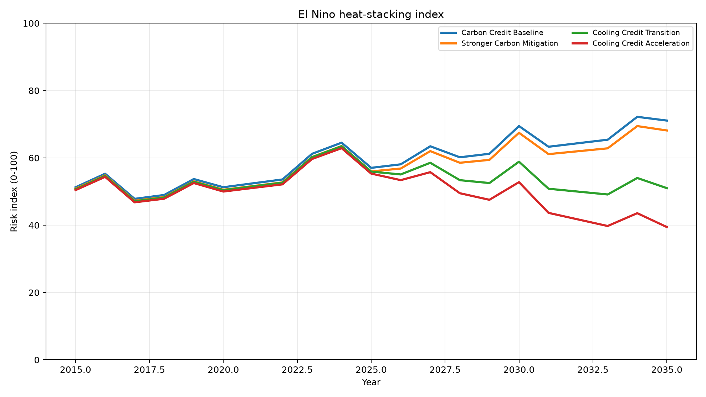

Document links use absolute GitHub URLs so they do not break when opened from the GitHub Pages domain.
Heat Stacking Mechanism
El Niño remains a natural climate phenomenon, but in a warmer climate it can occur on top of accumulated ocean heat, land heat, urban heat, WBGT stress, soil dryness, and weakened natural cooling functions.
The risk is not only an anomaly in one year. It is the stacking of a heat pulse on a higher baseline.
Carbon Accounting vs Thermal Accounting
Carbon Credits
Ask how much CO₂ was reduced, removed, or offset.
Cooling Credits
Ask how much heat load was physically reduced, avoided, dissipated, or buffered.
Heat Inertia and Time Lag
Emission reduction is necessary, but it does not immediately remove heat already stored in the ocean, land, cities, soil, and water-vapor system.
The Earth cools when heat input is reduced, existing heat load is physically lowered or buffered, and natural cooling functions are restored.
Cooling Credit Transition
Cooling Credits are proposed as a transition from carbon accounting alone toward thermal accounting and measurable cooling contribution.
Simulation
The conceptual simulation compares Carbon Credit Baseline, Stronger Carbon Mitigation, Cooling Credit Transition, and Cooling Credit Acceleration.

熱の重なりとしてのエルニーニョ
エルニーニョは自然現象である。しかし温暖化時代には、すでに海洋熱、陸上熱、都市熱、WBGTリスク、土壌乾燥、自然冷却機能の弱体化がある状態に、さらに熱が重なる。
問題は単年の異常値ではなく、高くなった基礎温度の上に熱の波が重なることである。
カーボン会計と熱会計
カーボンクレジット
どれだけCO₂を削減・除去・相殺したかを問う。
クーリングクレジット
どれだけ熱負荷を物理的に下げ、避け、逃がし、緩衝したかを問う。
熱慣性とタイムラグ
排出削減は必要である。しかし、それは海洋、陸地、都市、土壌、大気中の水蒸気システムにすでに蓄積された熱を即座に取り除くものではない。
地球は、熱の流入を減らし、既存の熱負荷を物理的に下げ、緩衝し、自然冷却機能を回復したときに冷える。
クーリングクレジットへの移行
クーリングクレジットは、カーボン会計だけに偏った制度から、熱会計と実測可能な冷却貢献へ移行するための制度として提案される。
シミュレーション
概念シミュレーションは、カーボンクレジット基準、強化された炭素緩和、クーリングクレジット移行、クーリングクレジット加速を比較する。
آلية تراكم الحرارة
يبقى النينيو ظاهرة مناخية طبيعية، لكنه في عصر الاحترار العالمي يأتي فوق محيط ويابسة ومدن وتربة وغلاف جوي تحتوي بالفعل على حرارة زائدة.
الخطر هو تراكم موجة حرارية فوق خط أساس أكثر سخونة.
محاسبة الكربون والمحاسبة الحرارية
أرصدة الكربون
تسأل عن مقدار ثاني أكسيد الكربون الذي خُفّض أو أزيل أو عُوّض.
أرصدة التبريد
تسأل عن مقدار الحمل الحراري الذي خُفّض أو جرى تجنبه أو تبديده أو تخفيفه.
القصور الحراري والتأخر الزمني
خفض الانبعاثات ضروري، لكنه لا يزيل فورا الحرارة المخزنة في المحيط واليابسة والمدن والتربة ونظام بخار الماء.
يبرد الكوكب عندما ينخفض إدخال الحرارة، وتُخفّض الأحمال الحرارية الموجودة أو تُخفّف فيزيائيا، وتُستعاد وظائف التبريد الطبيعية.
الانتقال إلى أرصدة التبريد
تقترح أرصدة التبريد كمسار انتقال من محاسبة الكربون وحدها إلى المحاسبة الحرارية ومساهمة تبريد قابلة للقياس.
المحاكاة
تقارن المحاكاة المفاهيمية مسارات أرصدة الكربون، والتخفيف الكربوني الأقوى، والانتقال إلى أرصدة التبريد، وتسريع أرصدة التبريد.